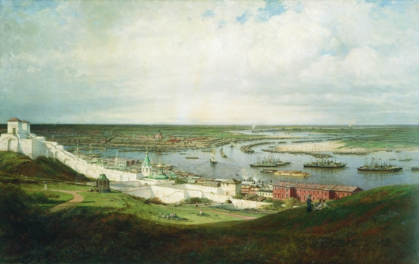

По сравнению с ранними полотнами, в этой картине гораздо больше живописности и «реалистичности».
Художник любил Нижний Новгород – с его ярмаркой, пестротой, обильным русским угощением.
Есть предположение, что именно один из нижегородских видов, будучи преподнесен императрице Марии Александровне,
жене Александра II, послужил для автора пропуском в свиту цесаревича, отправлявшегося в путешествие по России в 1863 году.